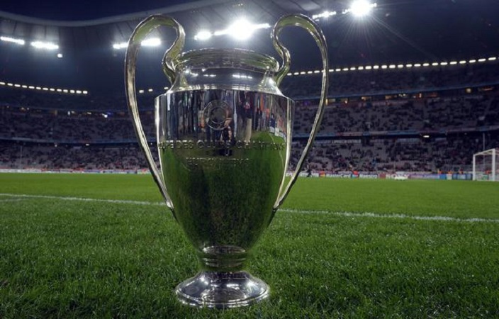
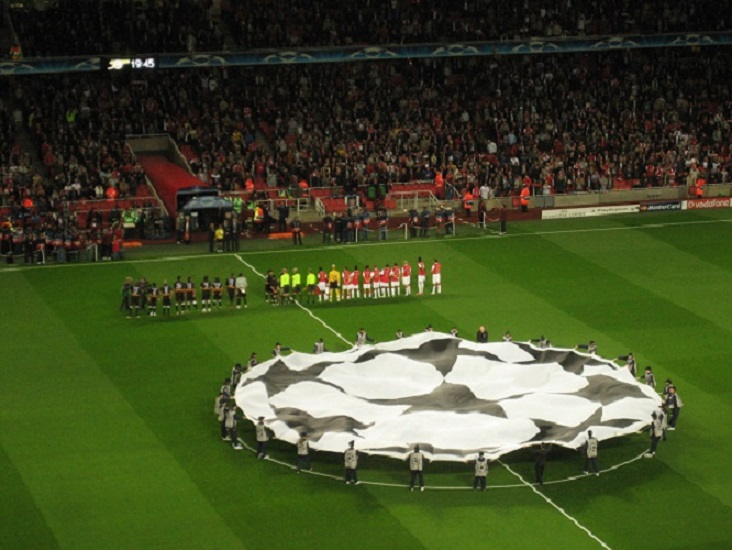

CHAMPIONS LEAGUE

Na zdjęciu widać logo piłkarskiej Ligi Mistrzów
Liga Mistrzów UEFA – międzynarodowe, europejskie, klubowe rozgrywki piłkarskie, utworzone z inicjatywy UEFA w 1992, jako kontynuacja Pucharu Europy Mistrzów Krajowych i regularnie prowadzone przez tę organizację od sezonu 1992/1993 w ramach europejskich pucharów. Przeznaczone dla najlepszych męskich drużyn klubowych (zajmujących czołowe miejsca w europejskich ligach krajowych) oraz rozgrywane na europejskich stadionach. Są to najbardziej prestiżowe klubowe zmagania piłkarskie w Europie. Najskuteczniejszym strzelcem Ligi Mistrzów (stan na 16 maja 2020r.) jest Cristiano Ronaldo z wynikiem 128 bramek. Robert Lewandowski w tej klasyfikacji jest na 4 miejscu ex aequo z Karimem Benzemą z wynikiem 64 goli. Najwięcej występów w Lidze Mistrzów zaliczył Iker Casillas-177 meczy.
Zwycięzcy rozgrywek Uefa Champions League (stan na 16 maja 2020r.)
Trofeum Ligi Mistrzów
Trofeum sportowym turnieju jest puchar wykonany ze srebra próby 925, o masie 11 kg i wysokości 74 cm. Zwycięzca zawodów puchar otrzymuje na 10 miesięcy na wypożyczenie od UEFA. Zwycięzca turnieju otrzymuje pomniejszoną (mającą maksymalnie 80% wielkości) kopię trofeum. Jeśli klub piłki nożnej zwyciężył trzy razy z rzędu w zawodach UEFA Champions League otrzymuje równowymiarową kopię COUPE DES CLUBS CHAMPIONS EUROPÉENS. |  |
Obecny system rozgrywek
|  | Od 2012 roku rozgrywki grupowe są poprzedzone eliminacjami, w których biorą udział mistrzowie niżej sklasyfikowanych krajów oraz drużyny z trzecich i czwartych miejsc z najlepszych lig europejskich. Sama Liga Mistrzów składa się z dwóch faz. Pierwsza to faza grupowa, gdzie 32 drużyny grają w 8 grupach po 4 w każdej. Wszystkie drużyny grają ze sobą dwa razy. Z każdej grupy awansują dwa najlepsze kluby, natomiast trzecia drużyna awansuje do Ligi Europy. Druga faza – play off rozgrywana jest systemem pucharowym. Drużyny z danej pary grają ze sobą dwa razy – raz u siebie, raz na wyjeździe. Gole na wyjeździe mają większą wagę. Do finału awansują dwie drużyny, które rozgrywają tylko jedno spotkanie na ustalonym przed startem rozgrywek neutralnym stadionie. |
Kontakt:
Mecze na żywoWarszawa ul.Sportowa 10
tel. (+48) 612095373
e-mail: meczenazywo@gmail.com